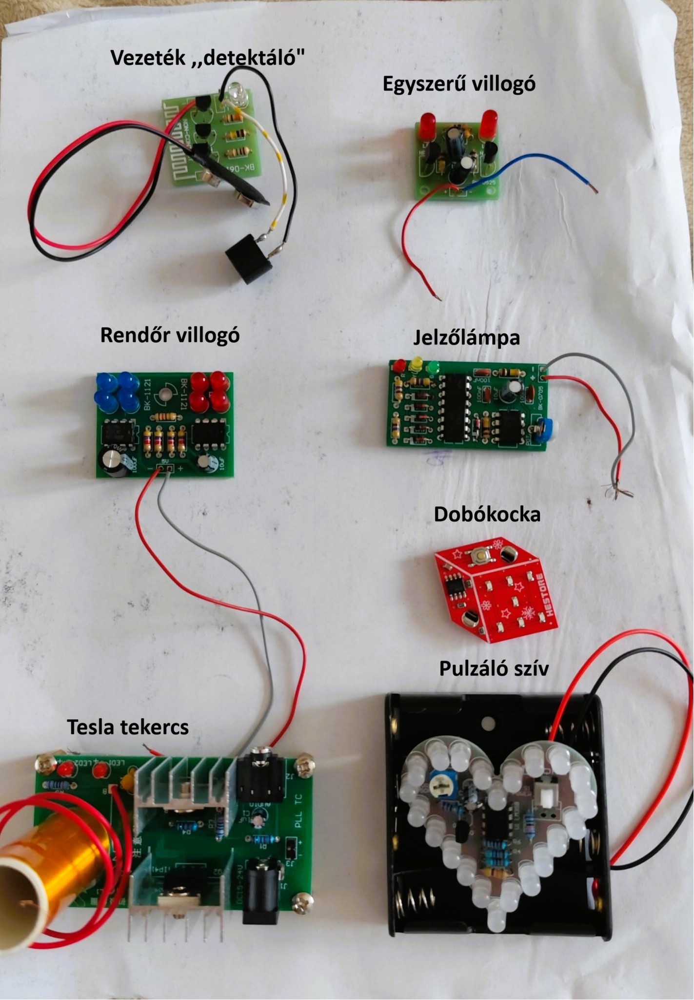
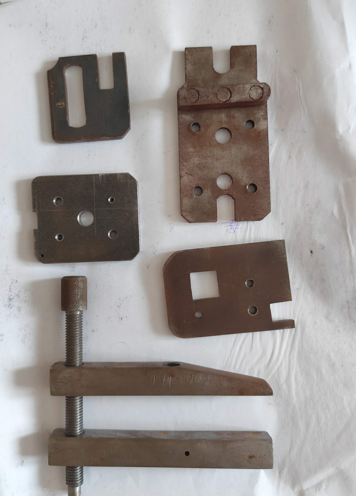
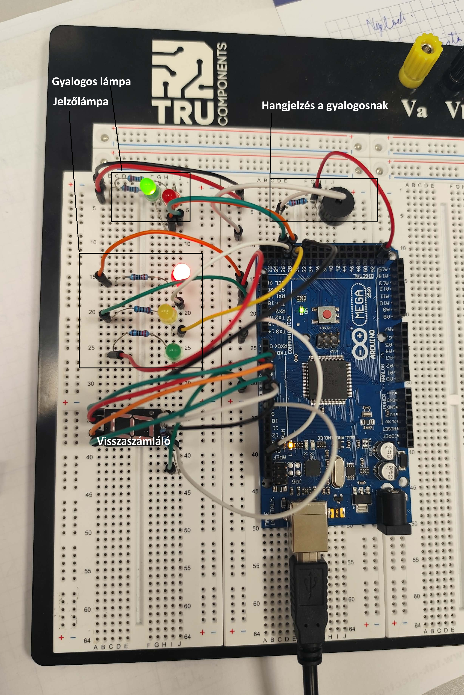
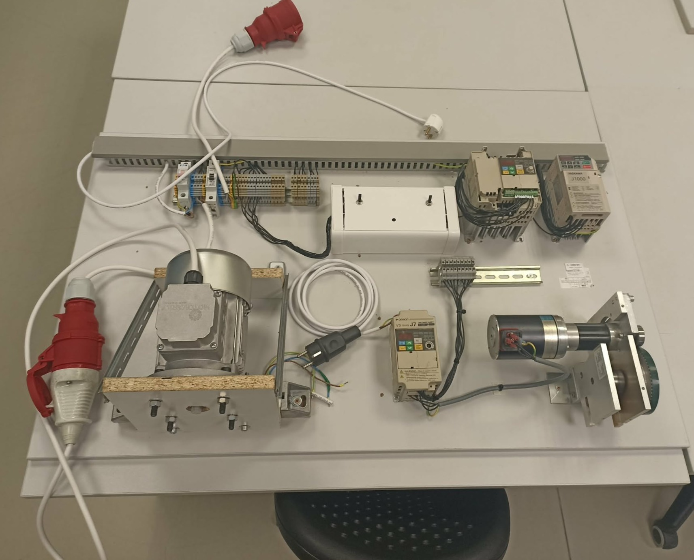
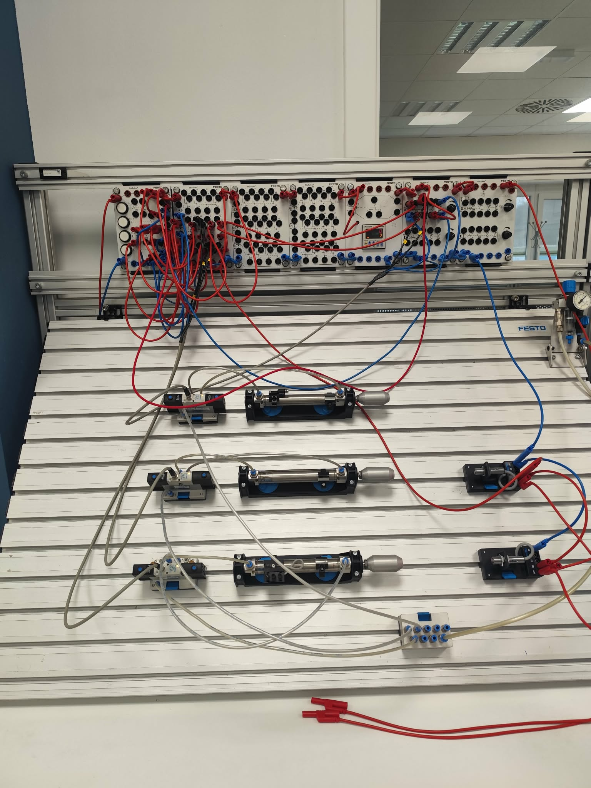
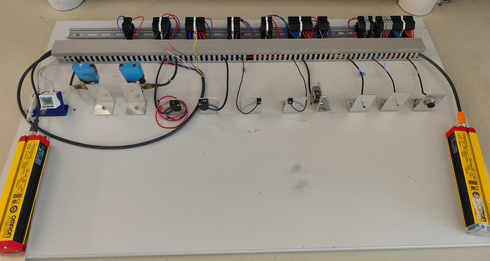
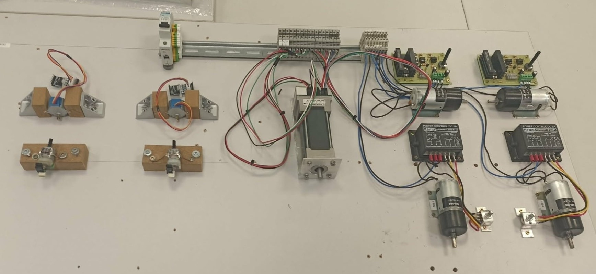

Már az első-második évtől fogva gyakoroltuk a forrasztást kisebb nagyobb sikerekkel.
Elsősorban breadboardon tesztelt köröket terveztünk,majd forrasztottunk össze rajzok-elrendezés alapján, majd berendelt nyákokon gyakoroltunk.
Később a TDK-ban is folytattuk a munkánk, kisebb szerkezeteket, áramköröket és kábeleket(kommunikáció) forrasztottunk.
A sok gyakorlat gyümölcsét pedig otthon is élvezhettem, többször is készítettem hobbiszerűen a családomnak és barátnőm családjának ajándékokat/hasznos eszközöket, hiszen el tudtam sajátítani ezt a képességet.

Az első két évemben tantárgyszinten be volt építve a mindennapjaimba, megismerkedtem a folyamatokkal, a hozzájuk tartozó eszközökkel és használatukkal.
Majd pedig folyamatosan az elkészített munkatervek és rajz alapján elkészítettük a munkadarabjainkat reszeléssel, fúrásokkal, fűrészelésekkel és persze sok-sok méréssel a folyamat közben.

Alkatrészei között megtalálhatóak: Arduino MEGA egység, LED-ek, egy hangszóró, egy hétszegmenses kijelző és persze az ezeket összekötő vezetékek, a tápellátást pedig egy usb kábel biztosította.
A működésével pedig szimuláltattuk egy kereszteződés egyik oldalának rendszerét, jelzőlámpával, gyalogátkelővel, számlálóval és hangjelzéssel.
A program szerint 8 másodpercig tart az autósoknak a piros, amely alatt a gyalogosok zöldet kapnak, s az utolsó három másodpercet hangjelzés kíséri a villogó zöldet a sürgetés jeleként.
Szinkronizálva átvált a gyalogos lámpája pirosra, az autósé piros-sárgára, majd zöldre 10 másodpercig, sárga majd piros és kezdődik elölről a program.

Található a táblán 2 motor, 3 frekvenciaváltó, potenciométerek, kapcsolók és 2 biztosíték.
Először felfogattuk a síneket, a kábelcsatornát, majd egymás után a motorokat és a frekvenciaváltókat. Utána következett a kissé hosszadalmas beüzemelés-bekötés.
A háromfázisú motornak egyedi tartót terveztünk és készítettünk, kétállású kapcsolóval(forgásirány) és egy potenciométerrel
vezéreltük a frekvenciaváltón keresztül. A tesztek felügyelet mellett, mind sikeresen végződtek, így kész is lett a gyakorlótábla az alsóbbéveseknek.

A táblán láthatunk 3 munkahengert, ezekhez tartozó szelepeket és 2 végállás szenzort.
A működését relatív egyszerűen el lehet magyarázni,
röviden tömören ABCCBA.
A bal oldalon 2 gomb van bekötve, SET/RESET funkcióval, a SET gomb kinyomja a felső munkahengert, és elindítja az időzítőt.
Az idő lejárta kinyomja a második munkahengert, amelynek a végállása kinyomja a harmadik munkahengert.
Ha a harmadik munkahenger végállása jelez és megnyomjuk a RESET gombot, akkor ugyanilyen sorrendben elvégződik viisszafelé a folyamat
A pneumatikával többször is szimulálni tudtuk a korábban megírt programjainkat is.

Hosszas kutatás után, adatlapok alapján leteszteltünk számos, a táblára felszerelt szenzort, később pedig részletesebben megismerkedhettünk a technológiájukkal és működésükkel elméletben.

Az elhelyezés kiötlése után tartókat/kisebb álványokat csináltunk a felfogatáshoz, majd a sikeres felhelyezés és bekötés után teszteltük őket a hozzájuk tartózó potenciométerekkel.